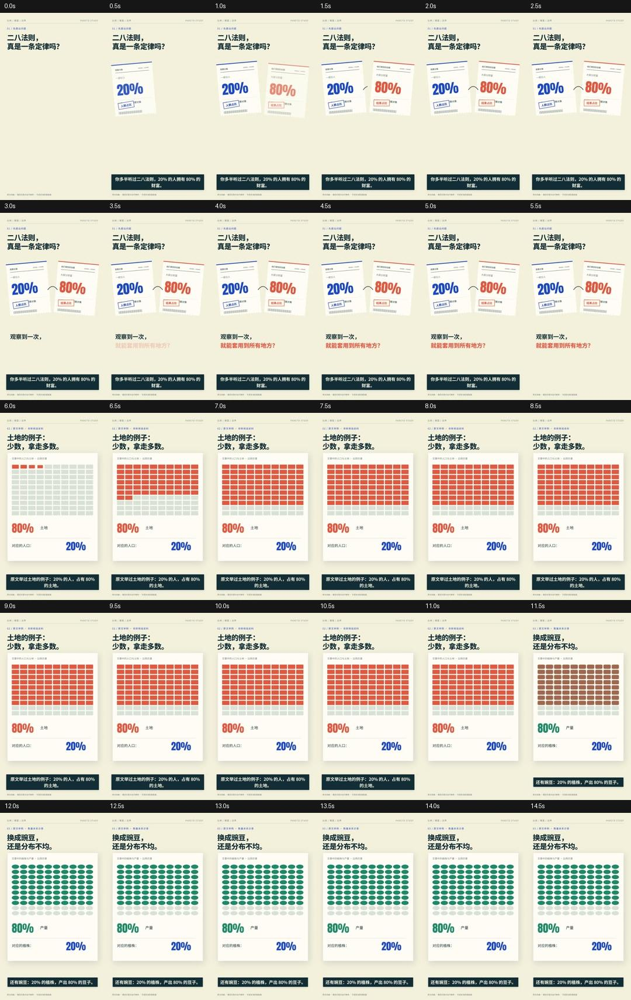
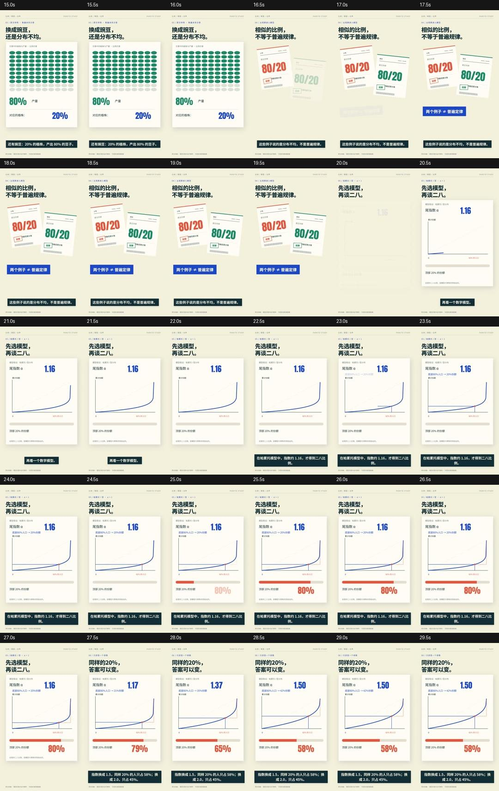
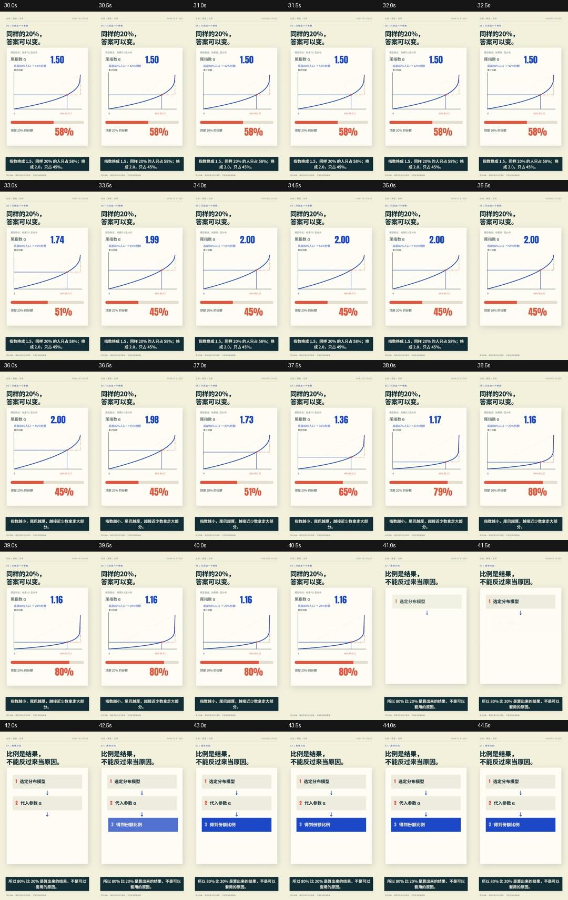

SAME TOPIC / COMPLETE FILM / ACTUAL REVIEW同一篇「二八法则」
改掉的，究竟是什么？
保留原选题、主要数字、音色和语速；从已有完整章节迁移纸面构图、账单对象与字幕层，重新编排解释动作。原片完整保留。
68秒完整改编 · 所有网页预览无音轨、默认暂停
BEFORE · 68.83s原组件路线
用户否决版本。旁挂SRT未进入画面；局部验证漏掉整片多段停滞。
AFTER · 68.43s完整工程改编
字幕真实入画；保留对象改参数，用具体分割解释64/4。尚待用户评价。
按同一论证段跳转：
这不是纯视觉控制实验：纠正了“所有80/20都必须是帕累托分布”的错误，给64/4补了重复比例条件，并将历史例子明确归于原文。稿件的少量更正改变了时码，因此按论证段对齐，不按秒强行同步。
实际迁移了什么
来自 《回本以后》完整工程 的纸张材质、账单轮廓与条码、字库、纸面证据布局、真实时间线与字幕层。新内容分别改成百格比例、连续变化的洛伦兹曲线、两次分割和两个离散反例。没有用三个人物组件套满全片。
同一格阵土地变豌豆，保留80格及其位置，改变颜色和形状。
同一曲线先读出底部份额，再取补集；变参数时曲线不退回空白。
落定再读数先取80%，再取其中80%；条形落定才显示64%。
这次如何检查
字幕逐条比较最终MP4与同帧有/无字幕对照，并核对整片实际字幕轨迹。节奏检查裁掉字幕和页脚，对主体画面寻找近静止区间；从开头到片尾看连续序列，关键交接加密检查。结果见记录，不能替代用户审美评价。
编码字幕像素记录 · 完整影片观察 · 实际修复记录 · 交付检查
展开整片连续序列（0–68.43秒）



给另一个Agent复用
现在默认迁移完整工程。三个kit只作组件试验和取材；只有SRT、字幕底板或中间12秒审看，均不能通过新的交付检查。这个案例仍不是万能模板：换文章需要改编对象、论证和镜头。
完整源码与复现命令下载配音分享版下载SRT返回素材展厅